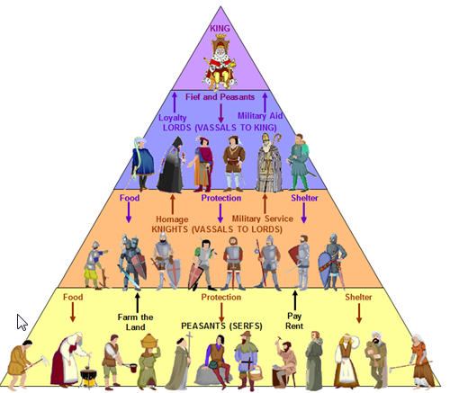

Ang pagbagsak ng Imperyong Romano ng Kanluran ay bunga ng isang kumbinasyon ng mga panloob na salik na nagpasama sa kanyang estruktura sa paglipas ng mga siglo. Isa sa mga pangunahing salik ay ang krisis sa ekonomiya. Harapin ng imperyo ang isang mabilis na pagtaas ng presyo, na pinalala ng pagbagsak ng halaga ng pera at di-nakokontrol na pagtaas ng buwis. Ang ekonomiyang Romano, na malapit na umaasa sa agrikultura at sa mga alipin, ay nagsimulang bumagsak habang ang produksyon ng agrikultura ay bumaba at ang mga presyo ng mga pangunahing produkto ay tumaas. Ang pag-asa sa mga alipin ay nagdulot din ng pagbawas sa inobasyong teknolohikal, na nagpadhimat sa ekonomiya na lalong hindi epektibo.
Ang mga digmaang sibil ay isa pang makabuluhang panloob na salik na nag-ambag sa pagbagsak ng imperyo. Ang laban para sa kapangyarihan sa pagitan ng iba't ibang faction at mga lider militar ay nagresulta sa patuloy na hidwaan na nagpahina sa mga yaman at nagpasama sa pagkakaisa ng imperyo. Ang kawalang-stabilidad sa pulitika dulot ng mga digmaang sibil ay lumikha ng isang kapaligiran na angkop para sa katiwalian at malaon na pamamahala, na lalong nagpalala sa mga problema sa ekonomiya at lipunan ng imperyo.
Bilang karagdagan sa mga panloob na problema, ang Imperyong Romano ng Kanluran ay humarap sa isang serye ng mga panlabas na banta na nagpadali sa kanyang pagbagsak. Ang mga pagsalakay ng mga barbaro ay isa sa mga pinaka-nawasak na panlabas na salik. Ang mga tribo tulad ng mga Visigoth, Vandal, at Huns ay paulit-ulit na sumalakay sa teritoryong Romano, ninakawan at winasak ang mga lungsod. Ang mga pagsalakay na ito ay hindi lamang nagdulot ng pisikal na pagkawasak, kundi pati na rin nagpasama sa pamamahala at ekonomiya ng imperyo.
Ang mga Visigoth, sa ilalim ng pamumuno ni Alarico, ay ninakaw ang Roma noong 410 D.C., isang kaganapan na nagpashock sa mundo ng Roma at sumisimbolo sa kahinaan ng imperyo. Ang mga Vandal, sa pamumuno ni Genserico, ay nakakuha ng Kartago noong 439 D.C. at kasunod nito ay ninakawan ang Roma noong 455 D.C. Ang mga pagsalakay ng mga barbaro na ito ay hindi lamang mga hiwalay na atake; sila ay kumakatawan sa isang patuloy na banta na nangangailangan ng isang gastos upang mapanatili ang depensa, na nagpapahina sa mga yaman ng imperyo.
Ang mga Huns, na pinangunahan ni Atila, ay nagrepresenta din ng isang makabuluhang bantang sa imperyo. Bagaman si Atila ay napabagsak sa Labanan ng mga Patlang ng Catalan noong 451 D.C., ang patuloy na pressure ng mga Huns sa mga hangganan ng Romano ay napilitang ilihis ang mga mahahalagang yaman para sa depensa, na lalo pang nagpapahina sa kanyang kakayahang harapin ang ibang mga panloob at panlabas na problema. Ang kumbinasyon ng mga pagsalakay na ito ng mga barbaro ay makabuluhang nag-ambag sa pagkakawasak ng imperyo.
Ang pagbagsak ng Imperyong Romano ng Kanluran ay tradisyonal na itinatakda noong 476 C.E., nang ang huling emperador Romano ng Kanluran, Romulus Augustulus, ay ipinatalsik ng lider barbaro na si Odoacer. Ang kaganapang ito ay madalas na itinuturing na huling marka ng Sinaunang Panahon at simula ng Gitnang Panahon sa Europa. Gayunpaman, ang pagbagsak ng imperyo ay isang unti-unting proseso at kumplikado, resulta ng mga dekadang pagbagsak.
Ang pagbagsak ng Roma ay hindi nangangahulugan na ang isang agarang pagbagsak ng sibilisasyong Romano. Maraming mga institusyon, tradisyon, at imprastruktura ng Romano ang patuloy na nakaapekto sa Europa. Gayunpaman, ang desentralisasyon ng kapangyarihan at ang pagkasira ng politika ay nagbigay daan sa paglitaw ng mga bagong kaharian at ng transisyon tungo sa Gitnang Panahon. Ang pagbagsak ng sentralisadong kapangyarihan ng Roma ay nagbigay-daan sa mga estruktura ng feudal, kung saan ang kapangyarihan ay ipinamamahagi sa mga lokal na panginoon, na nagmarka ng isang bagong panahon sa kasaysayan ng Europa.
Pagsilang ng Holy Roman Empire
Sinasabing bumagsak ang Kanlurang Imperyong Roman dahil sa mga barbaro na sumalakay at nagwasak sa kanilang kabihasnan. Ngunit, masasabi rin na ang pagsisimula ng tinawag na Holy Roman Empire ay nagmula sa kamay ng mga Franks, pangkat ng mga barbaro na lumusob sa Gaul (ngayon ay France).
Taong 486 nang sinalakay ng mga Franks, sa pamumuno ni Clovis I ang pwersang Roman sa Gaul. Matapos nito, itinatag niya ang kaharian ng mga Franks sa ilalim ng Dinastiyang Merovingian. Nagmula ang pangalang ito kay Merovius, ang ninuno ng mga Salian Frank. Nagpabinyag si Clovis ayon na rin sa kahilingan ng kanyang asawa na si Clotilde sa Rheims noong pasko ng 496 AD kasama ang kanyang 3,000 hukbo. Nang mamatay si Clovis, ang mga sumunod na hari sa kaniya ay tinawag na “mga tamad” na hari. Ang tunay na kapangyarihan ay nasa kamay ng mga maharlika na kung tawagin ay Mayor of the Palace o katumbas ng Punong Ministro.
Sa pagkamatay ni Dagobert, ang huling hari ng Dinastiyang Merovingian, noong 638, ay pinalitan ng Dinastiyang Carolingian. Si Charles Martel ang kauna-unahang Carolingian na naging Mayor of the Palace at tagapayo ni Haring Dagobert. Nakilala siya sa kasaysayan nang nagapi niya ang mga Moro sa Labanan sa Tours noong 732. Ito ang pagtatapos ng presensya ng mga Muslim sa Europe noong panahon na iyon.
Ang kauna-unahang haring Carolingian ay ang anak ni Charles Martel na si Pepin III. Dahil sa pahintulot ni Papa Stephen II at sa suporta na rin ng mga maharlikang Frank, tinanghal siya bilang “Hari ng mga Frank” noong 751. Bilang pasasalamat, tinulungan ni Pepin na mapalayas ang mga Lombard sa Gitnang Italy at ibinigay ang lupain sa papa. Tinawag ito sa kasaysayan bilang “Donasyon ni Pepin” na siyang nagbigay ng kapangyarihang pulitikal sa Simbahang Katoliko sa pagkontrol sa Gitnang Italy. Sa loob ng higit isang libong taon, pinamahalaan ito ng Simbahan at tinawag na Papal States.
Pumalit si Charlemagne sa kanyang ama, bilang hari noong 768. Inanyayahan niya ang iba’t ibang iskolar sa Europa upang turuan at sanayin ang mga pari at opisyal ng pamahalaan. Sinakop niya ang Lombard, Muslim, Bavarian at Saxon, at ginawang mga Kristiyano. Kinoronahan siya ni Papa Leo III habang nagdadasal sa altar ng Simbahan ni San Pedro noong pasko ng taong 800 at ipiniroklama bilang “emperador ng mga Roman”. Ang Imperyong Carolingian ay ang bagong imperyo na kinilala sa kanlurang Europa bilang tagapagmana ng Imperyong Roman ng mga Caesar. Sa pagkawala ni Charlemagne noong 814 matapos ang kanyang 46 na taong paghahari, nahati sa tatlo ang imperyo ayon sa Kasunduan sa Verdun noong 843 para sa kaniyang mga apo.
Noong 962, kinoronahan ni Papa John XII si Otto I, pinuno mula sa Gitnang Europa, bilang emperador at ito ang naging simula ng Holy Roman Empire. Sa kabila ng proklamasyon na ginawa, tanging sa pangalan lamang ang imperyo na tumagal ng higit walong siglo (mula 962 hanggang 1806).
Ang pagkokorona ng papa sa mga hari o emperador ay nangangahulugan na ang Simbahan noong Gitnang Panahon ay nagpapakita na maaari nilang ideklara o patalsikin ang sino mang hari o emperador. Ipinapakita din nito na ang mga papa ay higit na makapangyarihan sa mga pinunong sibil, kasama na ang mga hari at emperador. Ang mga pahayag na ito ay nagdulot ng maraming sigalot sa pagitan ng Simbahan at mga estado sa loob ng maraming panahon.
Piyudalismo
Nang bumagsak ang imperyo ni Charlemagne ay nabalot muli ng kaguluhan ang Europa kaya naman isinilang ang piyudalismo. Ang salitang piyudalismo ay galing sa salitang Latin na “feudum” na ang ibig sabihin ay pagbibigay ng lupain o fief sa mga nasasakupan. Ang Piyudalismo ay isang sistemang pamamalakad ng lupain na kung saan ang lupang pag-aari ng panginoong may lupa ay ibabahagi sa vassal at bibigyan ng proteksyon bilang kapalit manunugkulan ang vassal ng tapat at pagsisilbihan ang kanyang hari.

Dahil sa hindi kayang ipagtanggol ng Hari ang lahat ng kanyang lupain, ibinahagi niya ang mga ito sa mga nobles o dugong bughaw. Sila ang nagiging vassal ng hari samantalang ang hari naman ay tinatawag ring panginoong may lupa. Ang iba pang katawagan sa Lord ay “liege” o “suzerain”. Fief naman ang tawag sa lupang ipinagkaloob sa mga vassals.
Mayroon ding tinatawag na Homage na kung saan inilalagay ng vassal ang kanyang kamay sa pagitan ng mga kamay ng lord at nangangako rito na siya ay magiging tapat na tauhan nito. Bilang pagkilala o pagtanggap dito nag sasagawa ng lord ng isang investiture o isang seremonya kung saan binibigyan ng lord ang vassal ng fief. Ang tawag sa panunumpang ito ay Oath of Fealty.
Pamahalaang Piyudal
Masasabing mahina ang Pamahalaang Sentral sa lipunang piyudal. Ang hari ang namamahala sa buong kaharian, subalit hindi nito magawang ipatupad ang kaniyang kapangyarihan. Isa lamang siya sa maraming makapangyarihang panginoon.
Pagdating naman sa lokal na pamahalaan, maituturing na masigla ang pamumuno dito. Ang mga maharlika ang gumagawa ng mga batas, nagpapataw ng buwis, naggagawad ng hustisya at nagdedeklara ng pakikidigma.
Sa panahon ng digmaan, ang mga makapangyarihang panginoon ay hinihingi ang paglilingkod ng mga vassal upang bumuo ng isang hukbo.
Makikita sa lupain ng panginoon ang isang kastilyo. Tumatayo ito bilang moog o kuta dahil ito ay nakatayo sa mataas na lugar, binubuo ito ng mga matitigas na kahoy o makakapal na bato at napapaligiran ng malalim na trinserya o moat. Mayroon din itong tulay na maaaring itaas kapag may pagsalakay na nagaganap.
Kapag payapa naman ang panahon, nangangaso ang mga panginoon at nagsasagawa ng mga kunwa-kunwaring labanan o joust, mga paligsahan at pagsasanay sa mga kabataang lalaki na nagnanais maging kabalyero.
Ang isang kabataang maharlika ay pinag-aaral sa isang paaralang pang-militar upang sanayin sa pagsusuot ng kalasag (armor), paghawak ng espada, sibat (lance) at palakol. Pagsapit ng 21 taong gulang, siya ay isang mandirigmang nakasakay sa kabayo o kabalyero (knight). Ang bawat kabalyero ay inaasahang tutuparin ang mga alituntunin ng marangal na pag-uugali o chivalry.